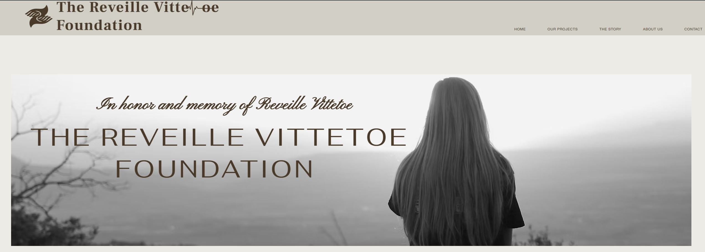

The Reveille Vittetoe Foundation is a nonprofit organization dedicated to supporting and empowering young professionals, students, and community members through scholarships, mentorship, and educational programs. As a board member and Treasurer, I contribute to the foundation's strategic planning and financial stewardship.
The Reveille Vittetoe Foundation aims to aid and empower young people, educators, and families through trauma-informed programs that promote mental health awareness and wellness. By educating about risk factors and warning signs, both visible and subtle, we aim to dismantle the stigma surrounding mental illness. Our goal is to foster connections, facilitate access to vital treatment and support services, and equip teachers and families with the tools to recognize signs of trauma. We are dedicated to fostering open, stigma-free conversations about mental health, ensuring that individuals feel empowered to seek help when they need it most.
Virtual support meetings are a core component, offering diverse opportunities for healing and growth. The storytelling livestream series features youth sharing personal stories about their mental health journeys in an effort to inspire hope and reduce stigma.
Free monthly workshops that teach teens and young adults beginner meditation and mindfulness practices in a supportive group setting to promote mental health and wellbeing.
This initiative provides school teachers with training in trauma, appointing mental health experts to supervise counseling services and the implementation of trauma-informed policies and programs.
This program provides workshops, conferences, and online resources for educators on trauma-informed practices, the impacts of trauma on learning, and supporting students' mental health.
This program provides free counseling and support groups for teachers from selected schools suffering from secondary trauma or compassion fatigue from working with traumatized students.
Learn more about our work and get involved at the official website: reveillevittetoe.org